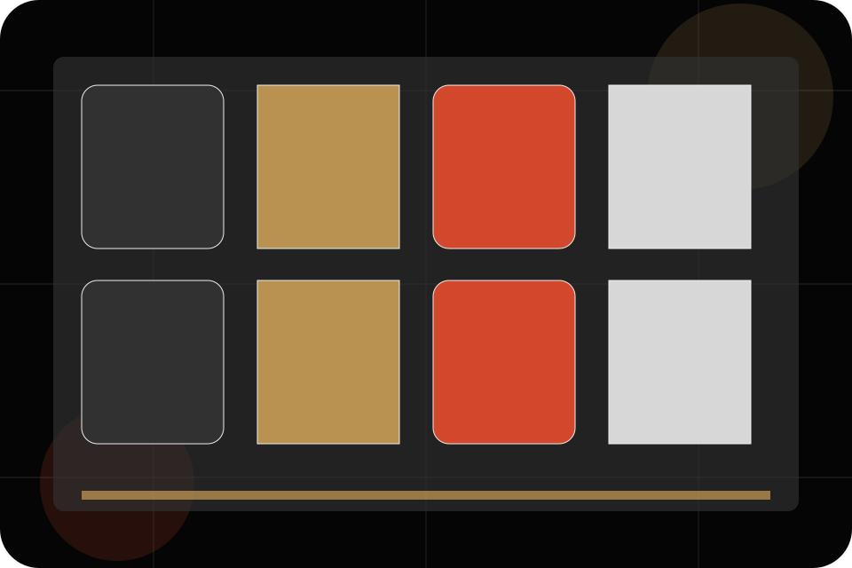
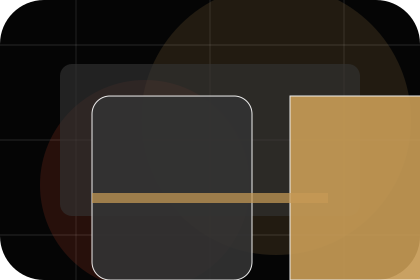
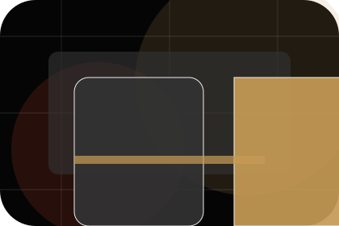
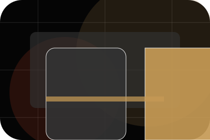
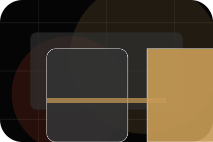
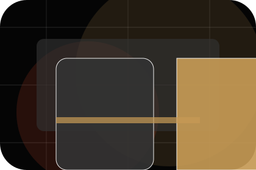
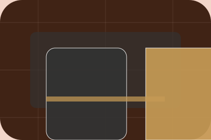

FAQ / 01
FAQ by Stage
FAQ shaped for entertainment, music & performance decisions.
FAQ opens as a clear entertainment decision hub: what Stage offers, who it helps, why it matters, and which route to take first.
The first screen combines positioning, proof, primary action, and fast internal navigation, so people can act immediately or compare the rest of the faq route with context.
Exposure reviewControl planResponse route
Dark poster hero
Choose ticket fit
Select the closest route and Stage keeps the next step, proof, and follow-up expectation aligned with excitement and access.

FAQ / 02
Entry
Entry handles buying doubts directly so visitors can understand timing, fit, limits, and the safest next step.
Answers are short by design: enough to remove hesitation, not so much that the page turns into documentation before the visitor can act.
Explore FAQEntry gives the page a specific angle instead of repeating the navigation label.
The poster event cards show what to compare, what to avoid, and what matters most for entertainment, music & performance visitors.
The final cue points to a useful internal route so the section keeps the journey moving.
FAQ / 03
Age
Age handles buying doubts directly so visitors can understand timing, fit, limits, and the safest next step.
Answers are short by design: enough to remove hesitation, not so much that the page turns into documentation before the visitor can act.
Explore FAQQuestion
Age gives the page a specific angle instead of repeating the navigation label.
Answer
The poster event cards show what to compare, what to avoid, and what matters most for entertainment, music & performance visitors.
Next Step
The final cue points to a useful internal route so the section keeps the journey moving.
FAQ / 04
Access
Access handles buying doubts directly so visitors can understand timing, fit, limits, and the safest next step.
Answers are short by design: enough to remove hesitation, not so much that the page turns into documentation before the visitor can act.
Explore FAQQuestion
Access gives the page a specific angle instead of repeating the navigation label.
Answer
The poster event cards show what to compare, what to avoid, and what matters most for entertainment, music & performance visitors.
Next Step
The final cue points to a useful internal route so the section keeps the journey moving.
FAQ / 05
Refunds
Refunds handles buying doubts directly so visitors can understand timing, fit, limits, and the safest next step.
Answers are short by design: enough to remove hesitation, not so much that the page turns into documentation before the visitor can act.
Explore FAQ

Question
Refunds gives the page a specific angle instead of repeating the navigation label.
FAQ / 06
Parking
Parking handles buying doubts directly so visitors can understand timing, fit, limits, and the safest next step.
Answers are short by design: enough to remove hesitation, not so much that the page turns into documentation before the visitor can act.
Explore FAQQuestion
Parking gives the page a specific angle instead of repeating the navigation label.

Answer
The poster event cards show what to compare, what to avoid, and what matters most for entertainment, music & performance visitors.

Next Step
The final cue points to a useful internal route so the section keeps the journey moving.
FAQ / 07
Security
Security gives the proof layer for faq: standards, evidence, and reassurance that make the next decision feel grounded.
Instead of relying on vague claims, Stage presents visible standards, process cues, and proof artifacts that help entertainment visitors judge fit.
Explore FAQEvidence
Visible proof that helps visitors believe the claims behind security.
Standard
The quality, safety, or operating expectation this section makes explicit.

Reassurance
What becomes clearer before someone decides whether to view tickets.
FAQ / 08
Timing
Timing handles buying doubts directly so visitors can understand timing, fit, limits, and the safest next step.
Answers are short by design: enough to remove hesitation, not so much that the page turns into documentation before the visitor can act.
Explore FAQQuestion
Timing gives the page a specific angle instead of repeating the navigation label.
Answer
The poster event cards show what to compare, what to avoid, and what matters most for entertainment, music & performance visitors.
Next Step
The final cue points to a useful internal route so the section keeps the journey moving.
FAQ / 09
Support
Support explains the practical scope, best-fit situations, and expected outcome so entertainment visitors can compare options without decoding jargon.
The section keeps the offer concrete: what is included, who it is best for, what decision it supports, and which linked route gives the deeper detail.
Open ContactBest Fit
Who should use support and when it belongs in the faq journey.
What Changes
The practical benefit visitors should expect after choosing this route.
Deeper Route
Where to compare details, pricing, support, or contact options before committing.
FAQ / 10
View Tickets
Stage closes the faq route with a clear action, a quick reminder of the value, and a low-friction way to view tickets.
Visitors who are ready can use the primary action. Visitors who are still comparing can scan the section links, proof, and support routes before they view tickets.
View TicketsThe final block keeps the choice simple: act now, compare one more proof route, or send enough detail for a focused response.
View Ticketsexcitement and access
View Tickets
An entertainment site with film-poster rhythm, dark editorial cards, ticket routes, and venue proof. FAQ ends with a direct path to view tickets, plus enough context for visitors who still need to compare.

View TicketsNotes
Information is provided for planning and should be reviewed for the final client, location, and operating rules.